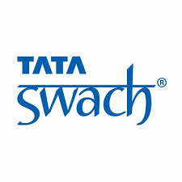

Ratan Tata
A Revolutionary Buisness Man
'Revolutionary'This word generally used for freedom-fighters , but this man revoltionised the growth story of India . He contributed none-the less than any other freedom-figher

Acts of Philanthrophy
Healthcare: Supported cancer treatment through Tata Memorial Centre
Education: Funded IITs and global institutions like Harvard and Cornell for academic advancements.

Clean Water: Introduced affordable solutions like Tata Swach and improved rural sanitation.
Disaster Relief: Led major relief efforts for calamities like COVID-19, tsunamis, and floods.
I don’t believe in taking the right decisions. I take decisions and then make them right. While it may be tempting to see only the success of others, the challenges and hardships they endured often hold the true lessons.
-Ratan Tata
Call to action! It's time!!
Sign up for more information , by clicking signup button on right